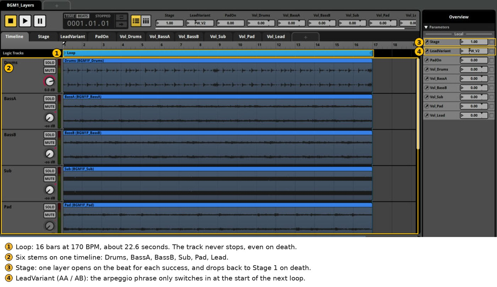
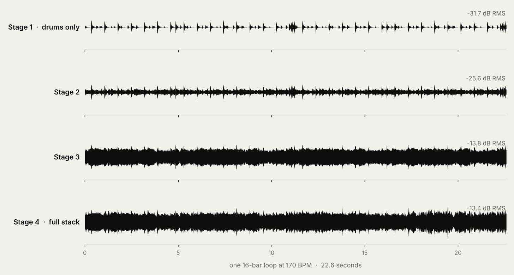

IntoTheShadow · Audio and systems design
The track that never stops
Making death cost the player their music without restarting the song.

- Problem
- The music restarted from the top every time the player died, so the worst moment in a run always sounded the same.
- My role
- Composed the track, designed and built the layer system, wired it into the build.
- What I built
- One continuous take with four layers that open on kills and collapse on death, running in FMOD.
- What changed
- Dying now costs the layers you earned, not the song. The take never stops.
Constraints and tradeoffs
I built the obvious option first, then cut it
There were two ways to go. Let the track play and never react, which is safe but tells the player nothing. Or restart it on death, which sounds responsive on paper. I built the second one.
In play it was the worse of the two. The same opening arrives at the most frustrating moment in the run, over and over, and at that point the music stops being feedback and becomes a punishment for losing.
Process
01Finding the technique already had a name
Metal: Hellsinger drives five instrumentation tiers off a Fury multiplier. DOOM moves between intensity levels using modular stems that share key and tempo, so parts enter and leave without a seam. Both are vertical remixing, and knowing that let me spend my time on the part specific to our game.
02Four layers on one take
Every kill opens one more layer on a take that is already playing, quantised to the beat so nothing arrives off-grid. Nothing new starts. Death drops the mix to stage one immediately, the tempo dips and climbs back, and the recording underneath never stops.
03Making stage one worse on purpose
I wrote stage one like a track, with a single drum part carrying all the energy, and on its own it sounded good. But stacking layers on a base that is already full does not make it bigger, it makes it louder, and a kill stops reading as a reward. I took energy out of stage one. On its own it got duller. That is what made the rest of the system possible.

Outcome
Running in the build
The system is live in the Unity build and plays through a full combat encounter without a seam. Layers open on kill, collapse on death, and the tempo recovery reads as the run restarting rather than the song restarting.
Six players tested the build in November 2026. Nobody was asked about audio, and three of them put the music in their three favourite things anyway. Two described the behaviour rather than the track, that it ramped up over time and that they liked the building music, and the third said they liked not being left in complete silence. Those are the two things the system exists to do, named by players who did not know there was a system. Nothing in the report mentions the music cutting out or restarting.
What I'd change
The reset was never a musical decision. It is this game's failure rule, written in audio. If I started again I would write stage one last, after the full stack existed, instead of writing it first and then having to take it apart.
Materials